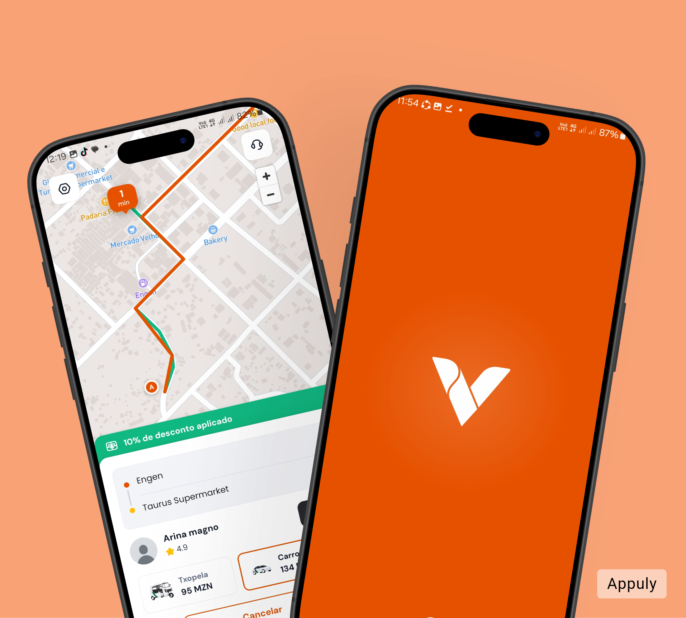
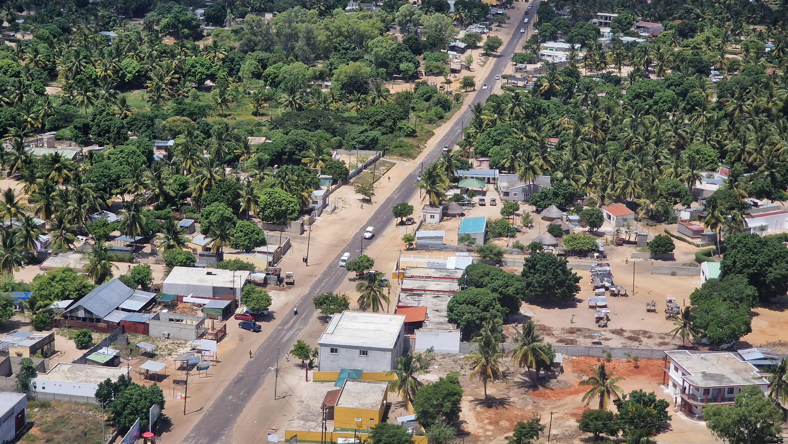

MOBILIDADE FEITA PARA SI
Movemos pessoas.
Aproximamos destinos.
Peça a sua viagem com facilidade. Do dia a dia aos momentos especiais, chegar ao seu destino pode ser simples.
V✦↗
Uma cidade mais conectadaMobilidade local, com pessoas no centro.
VILANKULOS, MOÇAMBIQUE
Vamos juntos
O seu próximo destinoEstá mais perto.
O seu próximo destino
Está mais perto.
Viagens práticasPeça sem complicações.
Mais confiançaUma experiência pensada para si.
Mobilidade localFeita para a nossa cidade.
OS NOSSOS SERVIÇOS
Escolha como
quer chegar.
Uma solução de mobilidade para diferentes percursos, necessidades e momentos do seu dia.

Tudo começa no seu telemóvelUma experiência simples e intuitiva.
SIMPLES COMO DEVE SER
A sua viagem.
Do seu jeito.
Pensámos em cada passo para que possa concentrar-se no que realmente importa: chegar onde precisa.
01
Escolha o destino
Indique onde está e para onde pretende ir.
02
Escolha a viagem
Selecione a opção que combina com o seu percurso.
03
Vá com tranquilidade
Acompanhe o processo e prepare-se para seguir viagem.

PARA QUEM MOVE A CIDADE
Conduza o seu futuro.
É motorista? Junte-se à comunidade VilaTáxi e ajude a ligar pessoas, negócios e destinos em Vilankulos.
- Registo simples
- Diferentes categorias de transporte
- Uma oportunidade de crescer connosco
VILATÁXI NO SEU DIA A DIA
O próximo destino
começa aqui.
Prepare-se para uma nova forma de se movimentar. Descarregue a aplicação Android e tenha a mobilidade mais perto.
Baixar APK Disponível para Android
VVilaTáxiA sua cidade, mais perto.